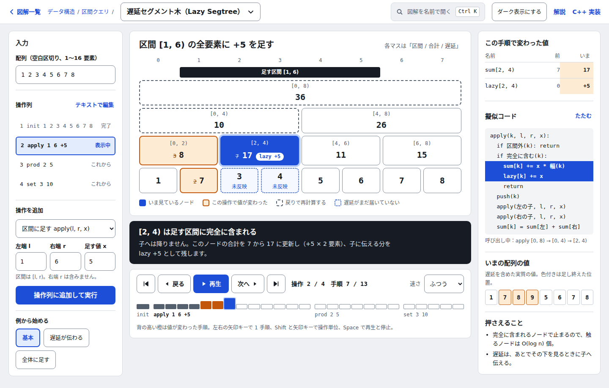

図解 UI の設計メモ
図解ページを作り直すときの共通仕様です。2026-11-24 に、プレーヤー型（図が主役）とデバッガ型（操作列・タイムライン・コード）を統合した案を採用しました。現状の問題点、進め方、進捗は issue #20 にあります。
実装はまだ始まっていません。既存のページは古い UI のままです。
見本 #
design/mock.html をブラウザで開くと、Lazy Segtree の区間加算（手順 7 / 13）を例にした見本を確認できます。操作できない静止画です。色や寸法は下の配色変数を正とし、見本から写さないでください。

画面の構成 #
┌──────────────────────────────────────────────────────────────────────────┐
│ 図解一覧 分野 / 小分野 / [図解名 ▾] [図解を名前で開く] [表示切替] 解説 実装 │
├───────────────┬──────────────────────────────────┬───────────────────────┤
│ 入力 │ 図 │ この手順で変わった値 │
│ 初期値 │ 見出し（いま行っている操作） │ 名前 / 前 / いま │
│ 操作列 │ 図本体 │ 擬似コード（ある場合） │
│ 操作を追加 │ 凡例 │ 補助の表示 │
│ 例から始める ├──────────────────────────────────┤ 押さえること │
│ │ 説明（いまの手順の題と本文） │ │
│ ├──────────────────────────────────┤ │
│ │ 再生バー・タイムライン・速さ │ │
└───────────────┴──────────────────────────────────┴───────────────────────┘
| 領域 | 置くもの | 決まり |
|---|---|---|
| ヘッダー | 一覧へのリンク、現在地、図解名、検索、表示切替、解説と実装へのリンク | 図解名のボタンから同じ分野の図解へ切り替える。タブは使わない（モードが多いと折り返して図を押し下げるため） |
| 入力（左） | 初期値、操作列、操作の追加フォーム、例 | JSON を手で書かせない。詳しくは「入力」 |
| 図（中央） | いまの操作を表す見出し、図、凡例 | 画面でいちばん広い領域にする。図の上に統計タイルを置かない |
| 説明（図の直下） | いまの手順の題と 1〜3 文の本文 | 図と再生バーの間に置き、視線を動かさずに読めるようにする。aria-live="polite" を付ける |
| 再生バー | 前の操作、戻る、再生、次へ、次の操作、現在位置、速さ、タイムライン | 並びと文言は全ページで同じにする。詳しくは「操作」 |
| 状態（右） | この手順で変わった値、擬似コード、補助の表示、押さえること | 「この手順で変わった値」は必ず出す。それ以外は図解ごとに任意 |
1440×900 で、図・説明・再生バーがスクロールなしに同時に見えることを目安にします。
狭い画面 #
幅 900px 未満では 1 列にし、図 → 説明 → 再生バー → 入力 → 状態 の順に並べます。入力を図より先に置きません。図が横にはみ出す場合は図の領域だけを横スクロールにします。
状態の表し方 #
色だけで区別しません。線の種類、塗り、ラベルを併用します。
| 状態 | 表し方 |
|---|---|
| いま見ている要素 | --now で塗りつぶし、文字は --on-now。外側に薄い輪 |
| この操作で値が変わった | --changed-soft の地と --changed の実線の枠。旧値を取り消し線で残す |
| あとで再計算・再訪する | --muted の破線の枠 |
| 更新がまだ届いていない（遅延など） | --now の点線の枠と、短いラベル |
| まだ触れていない | --line-strong の実線の枠 |
グラフの辺、木の枝、配列のセルにも同じ決まりを当てます。図解に固有の状態を足すときは、凡例に載せ、色以外の手がかりを必ず付けます。
配色変数 #
共通の CSS に次の変数を置き、各ページの CSS や JS に色を直書きしません。prefers-color-scheme に従い、ヘッダーの表示切替で上書きできるようにします（一覧ページと同じ data-theme 方式）。
| 変数 | 役割 | ライト | ダーク |
|---|---|---|---|
--bg |
ページの地 | #eef0f3 |
#12161c |
--surface |
パネルの地 | #ffffff |
#1a2029 |
--surface-2 |
コード欄など一段沈める地 | #f3f4f6 |
#222a35 |
--ink |
本文 | #171c24 |
#e8edf2 |
--muted |
補助の文字 | #55606e |
#a3b1c2 |
--line |
区切り線（装飾） | #d5dae1 |
#303a48 |
--line-strong |
入力欄・図の要素の枠 | #7f8a9b |
#7a889c |
--now |
現在位置、主ボタン、リンク | #1d4ed8 |
#7ab8ff |
--on-now |
--now の上の文字 |
#ffffff |
#0b1420 |
--now-soft |
選択中の行の地 | #e3ecfd |
#16304f |
--changed |
変更の枠、タイムラインの印 | #c2570c |
#f5c261 |
--changed-soft |
変更の地 | #fdebd3 |
#3a2f17 |
--changed-ink |
取り消し線を引いた旧値 | #8a4104 |
#f5c261 |
--caption-bg |
説明欄の地 | #171c24 |
#222a35 |
--caption-ink |
説明欄の文字 | #ffffff |
#e8edf2 |
計測したコントラスト比（WCAG の計算式）：
- ライト：
--mutedと--surface6.39、--on-nowと--now6.70、--nowと--now-soft5.64、--changed-inkと--changed-soft6.34、--line-strongと--surface3.49。 - ダーク：
--inkと--surface13.90、--mutedと--surface7.50、--on-nowと--now8.92、--changedと--changed-soft7.99、--line-strongと--surface4.55。
色を足すときは、文字 4.5:1 以上、枠や線 3:1 以上を満たすことを確かめます。
文字 #
- 外部通信なしで開けることを保つため、Web フォントは読み込みません。
- 文章：
"Hiragino Sans", "Yu Gothic UI", "Meiryo", "Noto Sans JP", system-ui, sans-serif。 - 数値・添字・コード：
ui-monospace, "Cascadia Code", Menlo, Consolas, monospace。 - 最小 12px。本文 14px、説明欄の題 17px、図の中の値 20px を基準にします。
- 英大文字に字間を空けた小見出しや、内容を表さない標語の見出しは使いません。ページの見出しは図解名、図の見出しは「いま行っている操作」にします。
操作 #
再生バーのボタンは、左から 前の操作へ／戻る／再生／次へ／次の操作へ の順に固定します。再生中は「再生」を「停止」に変えます。押せるものは 44px 以上の大きさにします。
| キー | 動作 |
|---|---|
← → |
1 手順戻る・進む |
Shift + ← → |
前・次の操作の先頭へ |
Space |
再生と停止 |
Home End |
最初・最後の手順へ |
Ctrl + K または / |
図解を名前で開く |
入力欄にフォーカスがある間は、これらのキーを奪いません。
タイムラインは操作ごとに区切り、1 手順を 1 つの目盛りで表します。済んだ手順、値が変わった手順（背を高くして --changed）、現在の手順（いちばん背が高く --now）、これからの手順（枠だけ）を区別します。目盛りを押すとその手順へ移動します。
速さは「ゆっくり／ふつう／速い」の 3 段階です。prefers-reduced-motion: reduce のときは図の動きを切り、状態だけを切り替えます。
URL には図解・入力・操作列を残し、再読み込みや共有で同じ状態を開けるようにします。file:// で history.replaceState が使えない場合も、図解そのものは動くようにします。
入力 #
- 入力は「初期値」と「操作列」（1 行に 1 操作）に分けて持ちます。
- 操作は、種類を選んで値を入れるフォームから追加します。操作列は「テキストで編集」に切り替えて直接書き換えることもできます（例：
apply 1 6 +5）。 - 一度に全体を処理するアルゴリズム（最短路、DP など）は、操作列を持たず、初期値のフォームと実行ボタンだけにします。
- 各図解に 2〜4 個の例を用意し、「例から始める」から 1 回の操作で読み込めるようにします。例の名前は、何が起きるかを表します（「基本」「遅延が伝わる」など）。
- JSON を手で編集する入力は廃止します。入力の項目は図解ごとの定義からフォームを組み立てます。
- 入力の誤りは、その入力欄のそばに「何が違うか」と「どう直すか」を出します。
- 結果を JSON のまま出しません。表、図、または文で示します。
文言 #
- 一覧へのリンクは「図解一覧」に統一します。
- ボタンは、押すと起きることを書きます（「操作列に追加して実行」「例を読み込む」）。
- 説明欄の題は、その手順で分かったこと・決まったことを 1 文で書きます（「[2, 4) は足す区間に完全に含まれる」）。本文は理由と結果を書きます。
- 区間の表記、添字の始まり、用語は、同じ分野のページで揃えます。
任意の部品 #
用意できた図解にだけ出します。ない図解では領域ごと出しません。
- 擬似コード：10〜15 行。いまの手順に対応する行を
--nowで塗ります。再帰するものは、下に呼び出し中の経路を 1 行で添えます。655 図解すべてに一度に付けることはせず、主要な図解から足します。 - 補助の表示：図とは別の見方が理解を助けるときに置きます（遅延を反映した実質の配列、優先度付きキューの中身など）。
- 押さえること：その図解で持ち帰る要点を 2〜3 個。
実装するときの注意 #
- 共通の枠（ヘッダー、説明欄、再生バー、タイムライン、キー操作、表示切替）は 1 か所に実装し、各図解は「入力の定義」「手順の列」「図の描き方」だけを持つ形にします。
- ページは分野ごとにまとめ直し、
b_1_6のような作業バッチ単位のページは残しません。URL が変わるページは、entries.json と一覧、docs/からのリンクを同じ変更で直します。 - 各ページの browser test（
verify/visualizations/*_browser_test.mjs）は要素の id に依存しています。載せ替えるときは id を保つか、同じ変更でテストを直します。 - 変更後は
make siteで一覧とhtml/を作り直し、make check-siteを通します。
採用しなかった案 #
- 教科書型（文章を読み進め、例を選んで「次の手順へ」を押すだけの構成）は、自由に入力して確かめる使い方に向かないため見送りました。「例から始める」と、平易な説明文の書き方だけを取り入れています。